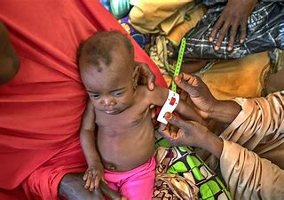

La faim est l'un des plus anciens fléaux de l'humanité et aussi l'un des signes les plus visibles de la pauvreté dans le monde. Et une meilleure nutrition est associée à une meilleure productivité : une personne bien nourrie sera plus productive au travail, et un enfant bien nourri développera de meilleures facultés cognitives qui se traduiront par une meilleure productivité à l'âge adulte.
La bonne nouvelle, c'est que la faim dans le monde est en régression. On peut constater sur le graphique ci-dessus que le coût de la malnutrition a été réduit de moitié, de 11% du PIB en 1900 à 6% aujourd'hui, et qu'il se réduira à 5% en 2050. Nous avons mesuré cette progression à la base de l'évolution de la taille des hommes adultes.
Dans les pays en voie de développement, nous avons constaté une augmentation de 4 cm en moyenne, de 164 cm à 168 cm. Une telle évolution, aussi petite soit-elle, peut amener une population d'un niveau de sous-alimentation modéré de 10% à un niveau 0. Projeté à l'échelle mondiale, cela se traduirait en 1,5 million de décès infantiles de moins.